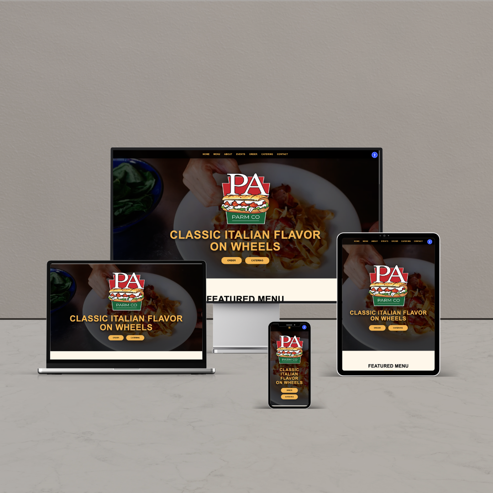

Featured Project
PARM CO
Modern responsive food truck website focused on layout, visual hierarchy, menu structure, and user-friendly design.
HTML • CSS • JavaScript • Responsive Design
Projects & Work
A collection of responsive websites and design-focused projects created through technical education, co-op experience, and personal practice.

Featured Project
Modern responsive food truck website focused on layout, visual hierarchy, menu structure, and user-friendly design.
HTML • CSS • JavaScript • Responsive Design
Co-op Work
Business-focused website work developed through co-op experience, using WordPress, Elementor, and client-centered design.
WordPress • Elementor • UI Layout
Website Concept
Promotional website concept focused on branding, structure, visual hierarchy, and local business presentation.
Branding • HTML • CSS
UI Concept
Futuristic interface concept focused on clean layout systems, content organization, and modern visual direction.
UI Concept • CSS • Layout